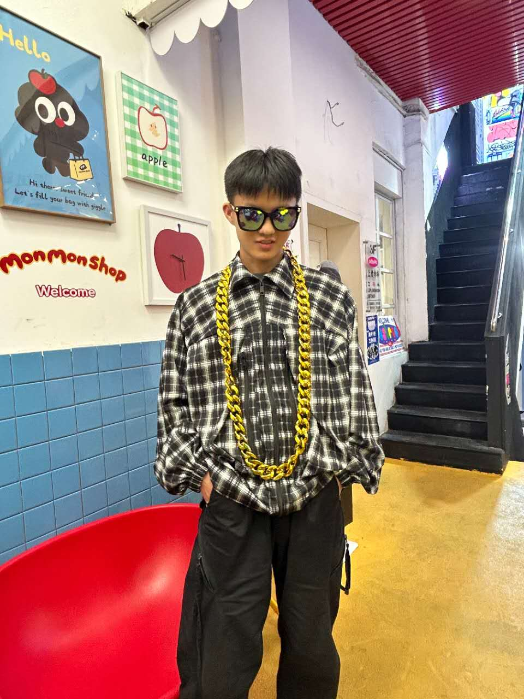
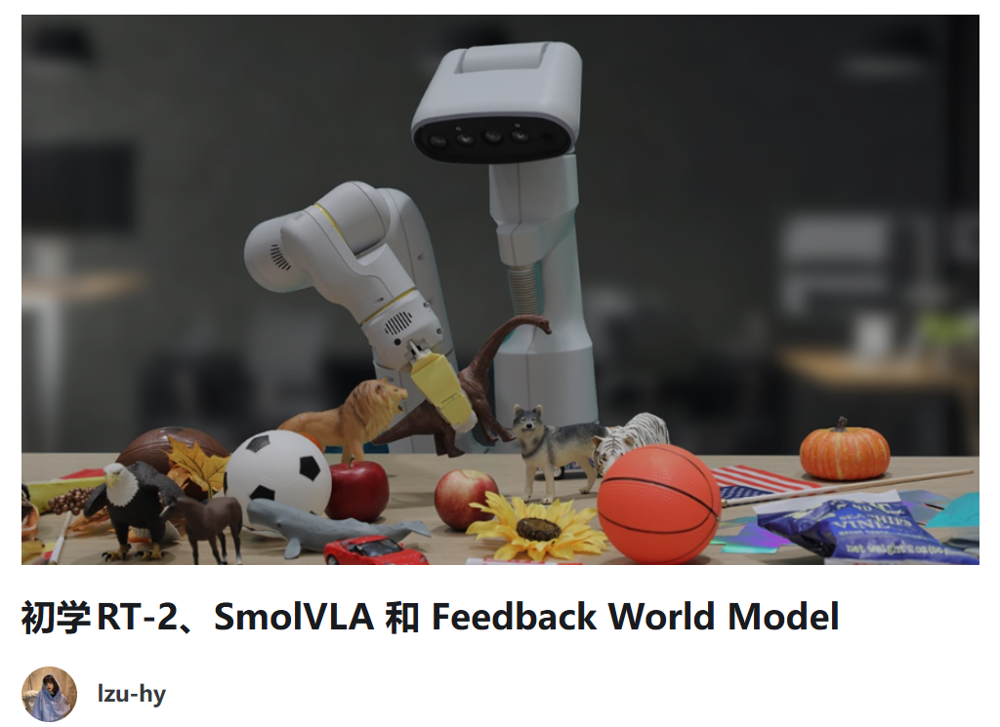
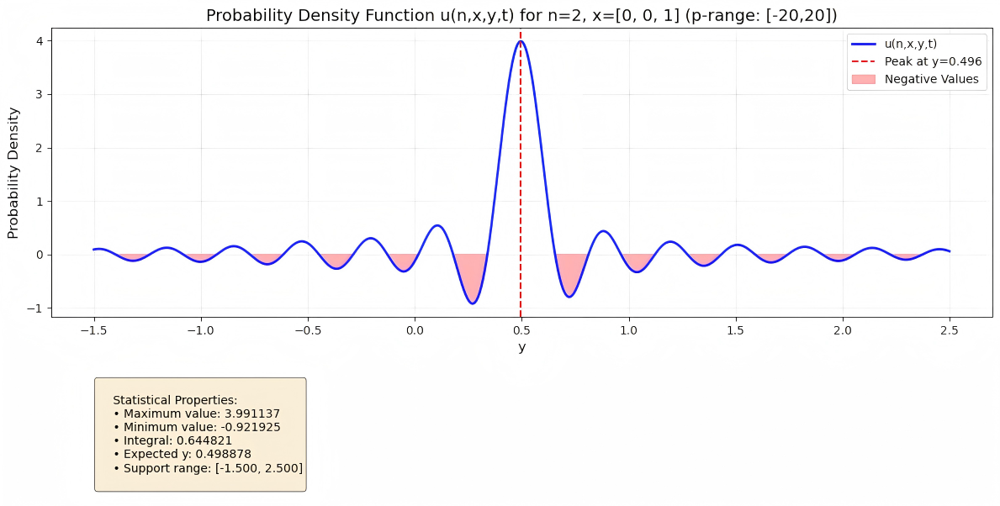
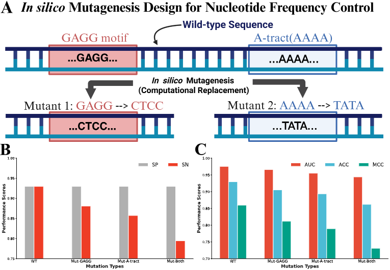
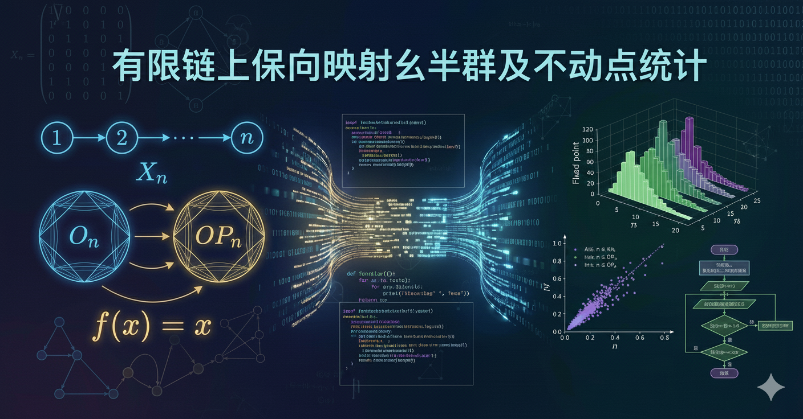
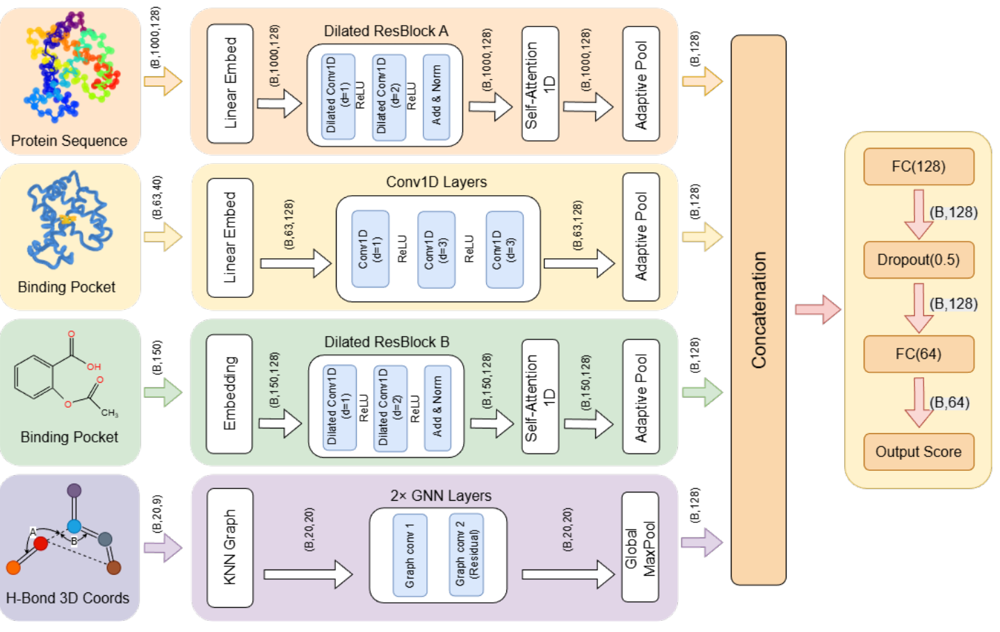

Yi He
Undergraduate Student · Mathematics and Applied Mathematics
Cuiying Honors College, Lanzhou University
National Program for Top Talents in Basic Sciences

About Me
I am currently a third-year undergraduate student pursuing Mathematics and Applied Mathematics at Cuiying Honors College, Lanzhou University. My research focuses on the Robot and AI. My primary research interests lie in AI × Science. I have led or participated in multiple interdisciplinary research projects, including the development of spherical BSDE algorithms, the construction of the DNA methylation prediction model and interpretability method CAD and CWGA, and the application of point cloud equivariant networks in part representation recognition.
Future Directions: I aim to focus on AI and robot control, and I plan to start up during or after my PhD, taking on a core leadership role.
Email: heyi2023@lzu.edu.cn
Wechat: HEYI050410
Education
University of California, Berkeley
Jan. 2026 - May. 2026- Selected Courses: CS 61B (Data Structures), Introduction to Neurotechnology, Linux System Administration
- Focus: Computer Science, Neurotechnology, and Entrepreneurship
- Affiliation: Member of Open Computing Facility (OCF)
Lanzhou University
Sept. 2023 - Jun. 2027- GPA: 4.02 / 5.0
- Rank: 9 / 126
- Awards: 2025 MCM/ICM Finalist (Top 2%)
- Extracurricular: Captain of the Swimming Team (School of Mathematics and Statistics); Captain of the Track and Field Team (Cuiying Honors College)
Leading Learning Projects
RT-2, SmolVLA and Feedback World Model
Working on Embodied AI projects. Currently studied: RT-2's action tokenization, SmolVLA's lightweight design & Flow Matching, Feedback WM's training‑inference decoupling & heterogeneous architecture, feedback world model and action‑aware weighting. Also performed local deployment, training, and evaluation of SmolVLA.

Leading Research Experience
Deep BSDEs: Solving Spherical Fokker-Planck and Feynman-Kac Equations
Developed a numerical solution method for high-dimensional partial differential equations under spherical geometric constraints, combining deep learning with backward stochastic differential equations (BSDEs) to address the curse of dimensionality in traditional methods.

MEDNA-DFM Model and XAI method: CAD & CWGA
Developed a DNA methylation prediction framework based on Dual-View FiLM-MoE architectures, and proposed the CAD & CWGA interpretability method, emphasizing internal mechanism analysis as a necessary condition for interpretability.

Collaborative Research Experience
Fixed points of orientation-preserving full transformation
Implemented computations for various semigroup mappings and fixed point calculations, with statistical analysis to propose novel patterns.

PathMoG : A Pathway-Centric Modular Graph Network for Multi-Omics Cancer Survival Prediction
Contributed to the core model design by introducing Feature-wise Linear Modulation (FiLM) as a key architectural innovation.

HBGSA: Hydrogen Bond Graph with Self-Attention for Drug-Target Binding Affinity Prediction

Industrial Part Representation and Assembly
Adopted point cloud-level contrastive learning and equivariant neural network approaches to transfer PointNet for part representation learning.

Skills
Python (PyTorch)
C & C++
MATLAB
VS Code & SSH
Linux & Conda
Numerical Computation
Monte Carlo Methods
FFT & IFFT
LaTeX
Markdown
HTML & CSS
AutoDL Cloud Computing
Web Deployment